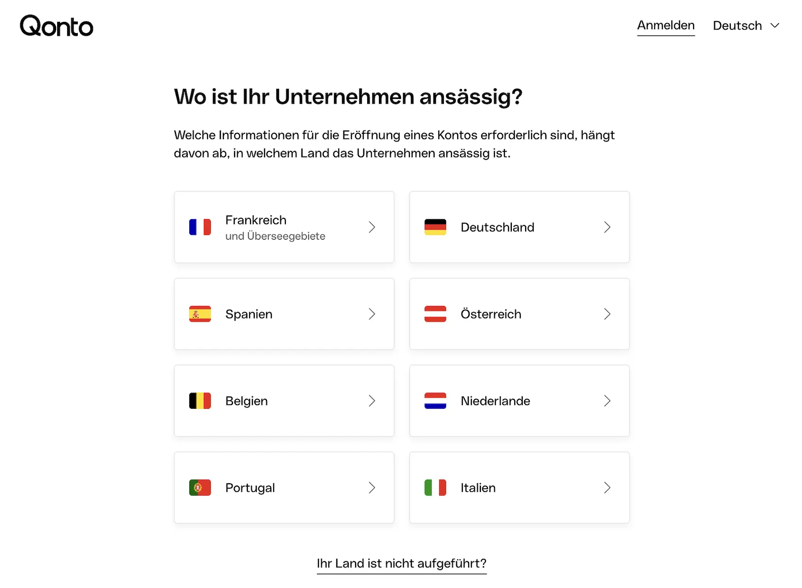

Das Wichtigste: Qonto Geschäftskonto
- Starter ab 0 €: für Selbstständige; darüber folgen Basic ab 9 € und Smart ab 19 €.
- Zielgruppenlogik: getrennte Tarife für Selbstständige, kleine Teams und größere Unternehmen.
- Einordnung: kein klassisches Kreditinstitut, sondern reguliertes Zahlungsinstitut mit Partnerbank-Modell.
- Bargeld: Einzahlungen sind nicht möglich; Abhebungen verursachen je nach Kartenmodell Zusatzkosten.
- Stärken: E-Rechnungen, virtuelle Karten, Echtzeit-SEPA und starke Buchhaltungsanbindungen.
- Weniger passend: für Bargeld, Filialnähe und Unternehmen mit klassischer Kreditbanken-Erwartung.
Für wen ist Qonto geeignet — und für wen nicht?
Am besten passt Qonto zu digital arbeitenden Freelancern, Solo-Selbstständigen und Teams, die Banking, Rechnungen und Freigaben in einem System bündeln wollen. Weniger passend ist Qonto für bargeldintensive Betriebe und für Unternehmen mit Wunsch nach klassischer Filialbankstruktur.
- Freelancer & Solo-Selbstständige — schlanker Einstieg mit digitalen Banking- und Buchhaltungsfunktionen
- Buchhaltungs-orientierte Nutzer — DATEV, Rechnungen und Automatisierung je nach Tarif
- GmbH- & UG-Gründer — eigene Antragsstrecken für mehrere Rechtsformen
- Teams & KMU — Rollen, Freigaben und virtuelle Karten in den höheren Stufen
- Bargeldintensive Betriebe — Einzahlungen sind nicht vorgesehen
- Nutzer mit Kreditbedarf — kein klassischer Dispo, nur externe Finanzierungspartner
- Spezialfälle bei Rechtsformen — nicht jede Struktur passt in die digitale Standardstrecke
- Papier-affine Unternehmen — beleghafte Überweisungen sind nicht möglich
Qonto Geschäftskonto: Rechtsformen
Qonto unterstützt in Deutschland eine breite Zahl an Rechtsformen. Im Hilfecenter nennt Qonto unter anderem Einzelunternehmer, Freiberufler, (e)GbR, GmbH, UG, AG, KG, oHG, PartG, e.V. sowie mehrere Mischformen. Für Firmengründungen nennt Qonto ausdrücklich GmbH i.G., UG i.G., gGmbH i.G. und gUG i.G.
| Rechtsformen | Status | Unterlagen / Hinweis |
|---|---|---|
| Einzelunternehmer, Freiberufler, (e)GbR | Möglich |
|
| GmbH, UG, gGmbH, gUG, AG, e.K., oHG, KG, KGaA, PartG, e.V., Mischformen | Möglich |
|
| GmbH i.G., UG i.G., gGmbH i.G., gUG i.G. | Möglich |
|
Qonto Geschäftskonto: Kosten & Konditionen
Die folgende Tabelle zeigt die wichtigsten Tarifunterschiede bei Qonto auf einen Blick. Alle Angaben basieren auf den offiziellen Qonto-Seiten, geprüft am 25. Mai 2026. Alle Preise netto zzgl. gesetzlicher MwSt.
| Leistung | SELBSTSTÄNDIGE | 1–9 MITARBEITER | 10–250+ MITARBEITER | HINWEIS |
|---|---|---|---|---|
| Für wen geeignet? | Starter 0 €, Basic 9 €, Smart 19 € | Basic 9 €, Smart 19 €, Premium 39 € | Essential 49 €, Business 99 €, Enterprise 199 € | Qonto staffelt heute nicht mehr nur linear, sondern nach Unternehmensgröße |
| Preisstruktur | 0–19 € / Monat Starter, Basic, Smart |
9–39 € / Monat Basic, Smart, Premium |
49–199 € / Monat Essential, Business, Enterprise |
Alle Preise netto zzgl. MwSt. |
| Transaktionen / Monat | 5 / 30 / 100 | 30 / 100 / 200 | 250 / 500 / 10.000 | je nach Tariftab sichtbar ausgewiesen |
| Karten | 1 virtuelle Karte bis 2 One Cards + 50 virtuelle Karten | 1 One Card bis 2 One Cards + 50 virtuelle Karten | 10 bis 30 Mastercard Karten virtuelle Karten je höherem Tarif breiter |
genauer Umfang hängt vom Untertarif ab |
| Unterkonten | ab Smart 1 Unterkonto | bis 4 Unterkonten | bis 99 Unterkonten mit eigener IBAN | stark team- und volumenabhängig |
| Buchhaltung / DATEV | ab Starter sichtbar Lexware Office, sevdesk und DATEV werden bereits im Selbstständigen-Tab genannt |
ab Smart erweitert Buchhaltungszugriff & erweiterte DATEV-Anbindung |
teamorientiert ausgebaut | Funktionsumfang nicht in jedem Tab identisch |
| Bargeld / Kartenlogik | Bargeld bleibt kein Schwerpunkt | je nach Karte und Tarif | größere Team- und Kartenlogik | Bargeldeinzahlung weiterhin nicht öffentlich vorgesehen |
| Konto eröffnen | Selbstständigen-Tarife → | Team-Tarife → | Business-Tarife → | Tarife ansehen → |
Qonto Geschäftskonto: Vor- und Nachteile
- Starke DATEV- und Buchhaltungsfunktionen
- Breites Integrations- und Workflow-Setup
- Digitale Kontoeroeffnung ohne Filialbesuch
- Rollen und Freigaben gut fuer Teams ausgebaut
- Skalierbare Tarife vom Solo- bis zum Team-Setup
- Keine Bargeldeinzahlung moeglich
- Bargeldabhebung kostet 2 EUR pro Vorgang
- Starter bleibt recht schlank bei Karten und Teamfunktionen
- Zusatzmodule und hoehere Tarife koennen teuer werden
- Nicht jede Rechtsform passt in die Standard-Antragsstrecke
Funktionen & Features im Detail
Der zentrale Unterschied zu reinen Banking-Lösungen ist bei Qonto die tiefe Integration von Buchhaltung, Teamverwaltung und digitalen Werkzeugen. Die Plattform ist konsequent auf Business-Nutzer ausgerichtet.
SEPA-Echtzeitüberweisungen (Instant)
SEPA-Echtzeitüberweisungen gehören bei Qonto sichtbar zum Angebot. Auf der aktuellen Preisseite werden SEPA-Überweisungen und ausgehende Lastschriften sowohl als normale als auch als Instant-Zahlungen genannt.
Rechnungsstellung & Buchhaltungsautomatisierung
Rechnungsstellung und Buchhaltungsfunktionen gehören zu den stärksten Bausteinen von Qonto. Je nach Tarif werden Rechnungsstellung, Buchhaltungszugriff und DATEV-Funktionen deutlich ausgebaut. Schon im Selbstständigen-Tab werden E-Rechnungsfunktionen früh genannt; in höheren Stufen kommen breitere Team- und Buchhaltungsfunktionen hinzu.
Tap to Pay & POS-Terminals
Tap to Pay für iOS und Android gehört bei Qonto sichtbar zum Angebot. Zusammen mit POS-Terminals und Zahlungslinks können Freelancer und kleine Händler Kartenzahlungen ohne klassische Terminal-Infrastruktur annehmen. Die genauen Gebühren unterscheiden sich je nach Tarif und Kartenart.
Sofortfinanzierungen & Kredite
Finanzierungen sind bei Qonto nur über Partnerlösungen eingebunden. Höhe, Verfügbarkeit und Bepreisung unterscheiden sich je nach Angebot und sollten direkt auf den aktuellen Qonto-Seiten geprüft werden.
Qonto Geschäftskonto: Karten
Wichtig zuerst: Qonto setzt ausschließlich auf Mastercard-Debitkarten. Girocard oder Visa gibt es hier nicht. Alle Karten buchen sofort vom Konto ab. Im Starter-Tarif steht zunächst eine virtuelle Karte im Vordergrund; in höheren Tarifen kommen physische One Cards und weitere Kartenkontingente hinzu.
-
One Card — ab Basic / höheren Tarifen sichtbarMastercard Debit · Apple Pay & Google Pay · anpassbare Limits · physische Karte je nach Tarifstufe
-
Plus Card — KostenpflichtigMastercard Debit · Reiseversicherung & Einkaufsschutz · Inkl. Freiabhebungen · Lounge-Zugang
-
X Card (Metal) — KostenpflichtigMastercard Metal · Premium-Versicherungspaket · Unbegrenzte Freiabhebungen · Exklusives Design
Qonto Geschäftskonto: Bargeld & Abhebungen
Qonto bleibt beim Bargeld klar digital. Einzahlungen sind öffentlich nicht vorgesehen, und Abhebungen hängen stark vom jeweiligen Kartenmodell ab.
| Leistung | One Card | Plus Card | X Card |
|---|---|---|---|
| Bargeldabhebung | 2 € pro Abhebung | Freiabhebungen inkl. als kostenpflichtige Zusatzkarte |
unbegrenzte Freiabhebungen als kostenpflichtige Zusatzkarte |
| Bargeldeinzahlung | nicht vorgesehen | nicht vorgesehen | nicht vorgesehen |
| Kartenlogik | Standardkarte im Qonto-Setup | Upgrade mit Reise- und Bargeldvorteilen | Premium-Karte mit stärkstem Bargeldpaket |
| Einordnung | für gelegentliche Abhebungen ok | für häufigere Bargeldnutzung sinnvoller | am besten für Bargeldbedarf innerhalb von Qonto |
Buchhaltung, DATEV & Softwareintegrationen
Besonders stark ist Qonto bei Buchhaltung und Softwarelogik. Schon im aktuellen Selbstständigen-Tab werden Verbindungen zu Lexware Office, sevdesk und DATEV genannt. Smart und die höheren Stufen bauen den Umfang weiter aus.
- DATEV: Im Selbstständigen-Tab bereits sichtbar; Umfang und Tiefe werden je nach Tarifstufe ausgebaut.
- Lexware Office, sevDesk, lexoffice: API-Anbindung und automatische Transaktionssynchronisation.
- OCR- und Beleglogik: Weiter ausgebaute Automatisierung in höheren Tarifstufen.
- EBICS-Zugang: Je nach höherem Tarif bzw. Team-Setup.
- Steuer- und Ausgabenlogik: Je nach Tarif tiefer in Buchhaltung und Workflows integriert.
Einlagenschutz & Regulierung bei Qonto
Qonto ist kein klassisches Kreditinstitut, sondern ein in Frankreich reguliertes Zahlungsinstitut. Welche Schutzlogik konkret greift, hängt deshalb vom jeweiligen Produkt und der dahinterliegenden Verwahrstruktur ab und sollte nicht pauschal wie bei einer klassischen Vollbank gelesen werden.
| Status | Zahlungsinstitut |
| Aufsicht | ACPR (Frankreich), in Deutschland via Passporting / BaFin-Meldung |
| Schutz von Kundengeldern | Abhängig vom jeweiligen Produkt- und Verwahrmodell |
| Wichtiger Hinweis | Maßgeblich ist, welche Partnerbank oder Verwahrstruktur im konkreten Produkt greift |
Wie eröffne ich ein Qonto Geschäftskonto?
Die Kontoeröffnung läuft vollständig online. Wie schnell das Konto freigeschaltet wird, hängt vor allem von Verifizierung, Rechtsform und Dokumentenlage ab.
- Tarif wählen: Auf qonto.com/de den passenden Tarif für Freelancer oder Teams auswählen und den Antragsprozess starten.
- Unternehmensangaben eingeben: Rechtsform, Firmenname, Handelsregisternummer (bei juristischen Personen), USt-IdNr. und Geschäftsadresse.
- Identifikation per Video-Ident: Personalausweis oder Reisepass bereithalten. Für GmbH/UG sind zusätzlich Gründungsdokumente erforderlich.
- IBAN freischalten: Nach erfolgreicher Prüfung wird die deutsche IBAN im Konto freigegeben. Die genaue Dauer hängt vom Einzelfall ab.
- Karte bestellen: Die physische Mastercard One wird per Post geliefert (einige Werktage). Virtuell kann sofort gestartet werden.

Qonto Geschäftskonto Fazit 2026
Kurzfazit: stark bei Rechnungen, Rollen, Freigaben und digitaler Teamorganisation, schwächer bei Bargeld, Filialnähe und klassischer Banklogik.
Besonders lohnt sich das Qonto Geschäftskonto 2026 für Selbstständige, Einzelunternehmer und Teams, die Rechnungen, Buchhaltung, Karten und Freigaben in einem System bündeln wollen. Weniger passend ist Qonto für Unternehmen mit Bargeldbedarf oder Wunsch nach klassischer Bankinfrastruktur, weil hier andere Anbieter im Alltag meist praktischer aufgestellt sind.
Nicht das Richtige? Diese Alternativen könnten passen
Alle drei Anbieter haben wir ebenfalls getestet — hier die wichtigsten Unterschiede auf einen Blick.
Gut für Solo-Setups, die Rechnungen, Buchhaltung und ein einfaches digitales Konto enger zusammenführen möchten.
✓ klarer Solo-Fokus
× Bargeld bleibt auch hier kein Fokus
Praktischer für Unternehmen, denen Bargeld, klassische Banknähe und konservativere Kontologik wichtiger sind als reine Software-Workflows.
✓ klassischere Bankinfrastruktur
× weniger digital-first als Qonto
Interessant für Teams, die ebenfalls ein stark digitales Karten- und Rechnungssetup suchen, aber Qontos Rollenlogik nicht zwingend brauchen.
✓ mehr All-in-One-Charakter als klassische Banken
× weniger strukturiert bei Rollen und Freigaben als Qonto
Alle Konten im großen Vergleich: Geschäftskonto-Vergleich 2026 →